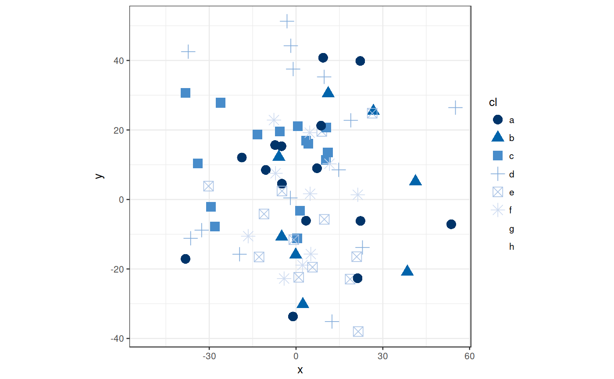
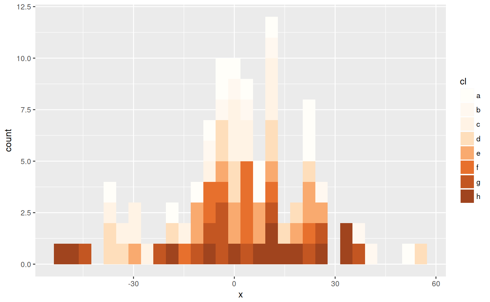

A collection of colour palettes used by UN OCHA Visual Unit. The list of available palettes is: blue gray tan red
ocha_palettes
An object of class list of length 4.
# Make an x-y plot using the Namatjira palette library(tidyverse)#>#> #> #> #>#> #> #> #> #>df <- data.frame(x = rnorm(100, 0, 20), y = rnorm(100, 0, 20), cl = sample(letters[1:8], 100, replace=TRUE)) ggplot(df, aes(x, y, colour=cl, shape=cl)) + geom_point(size=4) + scale_colour_ocha() + theme_bw() + theme(aspect.ratio=1)#> Warning: The shape palette can deal with a maximum of 6 discrete values because #> more than 6 becomes difficult to discriminate; you have 8. Consider #> specifying shapes manually if you must have them.#> Warning: Removed 25 rows containing missing values (geom_point).# Make a histogram using the McCrea Collins Street palette ggplot(df, aes(x, fill=cl)) + geom_histogram() + scale_fill_ocha(palette = "tan")#>